5 Make a map with LANDFIRE data
6 Make a map with LANDFIRE data
6.1 Universal Design and Accessibility
When it comes to maps and visuals, it is important to pay attention to details such as font, font size, color contrast, map colors, and layout. These elements play a crucial role in ensuring the best experience for everyone. This concept is known as Universal Design.
By law, anything created with Federal funds is required to be accessible to all users. However, Universal Design goes beyond compliance. It emphasizes creating spaces, products, and visuals that are accessible and user-friendly for everyone, regardless of their abilities.
Implementing Universal Design concepts in map design, cartography, and presenting complex information can be challenging. For example, map data is often complex and uses a large number of colors that can make it difficult to understand. The LANDFIRE Biophysical Settings color ramp has over 400 unique values, making it especially difficult for people with color vision differences to interpret. Additionally, many datasets have default color ramps that are not accessible or useful. This means that cartographers either have to spend time recoloring the datasets or deliver maps with inaccessible color displays, thus making their products inaccessible.
The LANDFIRE team is still in the early stages of implementing Universal Design. We still have a lot to learn, but we are dedicated to doing what we can to get this right. To that end, we have created a series of videos and a collection of resources to help everyone get started. You can find these resources in the description boxes of each video.
View the Universal Design in Cartography playlist on our YouTube Channel
6.2 Making a Map in ArcGIS Pro
6.2.1 What you will learn here
- How to bring data into ArcGIS Pro
- How to change the layer symbology
- How to export an attribute table
- Bonus Action: How to combine two raster datasets
6.2.2 Adding data in ArcGIS Pro
There are several ways you can add data in ArcGIS Pro: from a local file, from a url (using a WMS or REST service, for example), from ArcGIS Online, from ESRI’s living atlas, and more. For this tutorial, we will focus on adding data from a local file on our machine.
If you’ve been following along, you’ve already used the LANDFIRE Map Viewer to draw a rectangle around or upload your shapefile of interest then download the relevant LANDFIRE datasets. These should be saved to your computer. They may be stored as .zip files. You will need to unzip them before uploading to ArcGIS Pro.
To add your data to ArcGIS Pro
Click on the ‘Add Data’ button (yellow rectangle with a plus sign) on the top ribbon bar. It’s located under the ‘Map’ tab in the top menu.
Browse to the location of your spatial data layers. If your data are in more than one folder, you’ll need to add each layer separately. If they are in the same folder, you can CTRL+click or SHIFT+click to add multiple datasets at once.
Bonus Action: You may get a message asking if you want to build pyramids. Pyramids will help your map draw faster, but I don’t recommend building pyramids on LANDFIRE data, as this can sometimes do wonky things with the display at smaller map scales. I generally click the ‘No’ box for these datasets.
6.2.2.1 Screenshots for adding data to ArcGIS Pro
Where to click to add data.
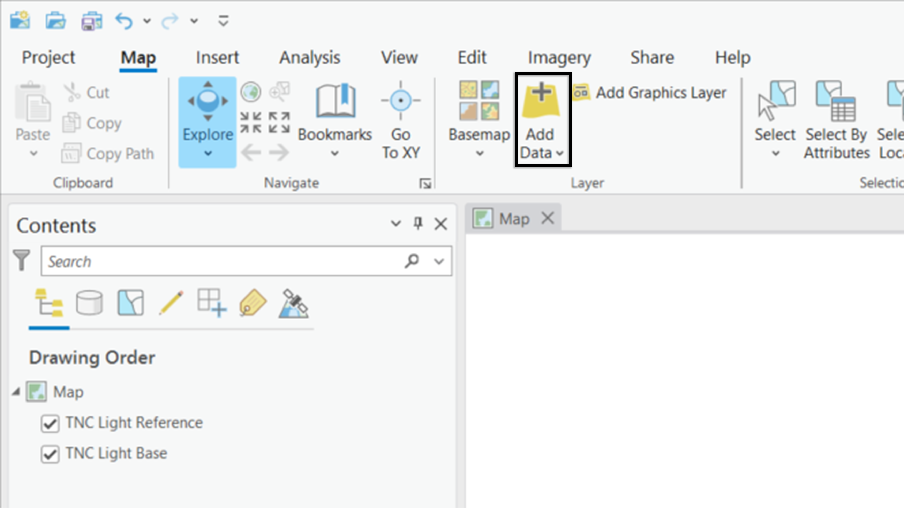
Browsing to your data. Note: You will use your own file path to wherever your data are saved
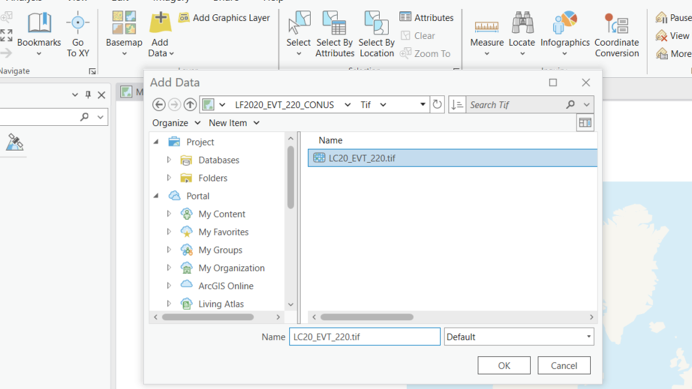
Build Pyramids options
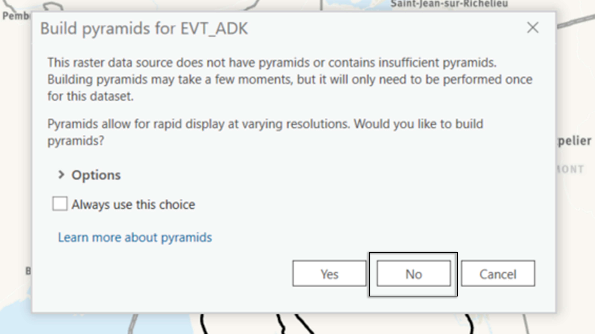
6.2.3 Change the layer symbology
When you add the LANDFIRE data to ArcGIS Pro, it often adds with either a greyscale color scheme or some other ‘Stretch’ color ramp that isn’t useful for understanding or visualizing the data. In most cases, we will want to view our data by looking at the ‘Unique Values’ of a particular field within the attribute table. For this example, we’ll be looking at the Existing Vegetation Type layer, choosing to symbolize on the EVT_Name field. The process is the same for any layer and any field, but the specific field may be different depending on what attributes you’re interested in.
Changing the layer symbology
Right click on the layer name in the table of contents to open the layer properties menu, then browse to ‘Symbology’. This option can be found about two-thirds of the way down the menu.
This will open the ‘Symbology’ pane in the right sidebar. Here you can use the dropdown arrow under ‘Primary Symbology’ to change the symbology type from ‘Stretch’ to ‘Unique Values’.
The layer will symbolize using the unique values within a field in the table. By default, raster layers will choose to symbolize on the ‘Value’ field. In this case, we’re interested in the Existing Vegetation Type names, so we’ll use the ‘Field 1’ dropdown to select the EVT_NAME field instead.
When you’re done, you can choose to leave the symbology pane open, hide it using the pin icon found next to the x in the top right corner of the pane, or use the x to close it entirely. Remember that if you want to change the symbology, you’ll need to start from step 1 to open the pane again.
6.2.3.1 Screenshots for symbolizing EVT with Unique Values
Where to click to open the symbology pane.
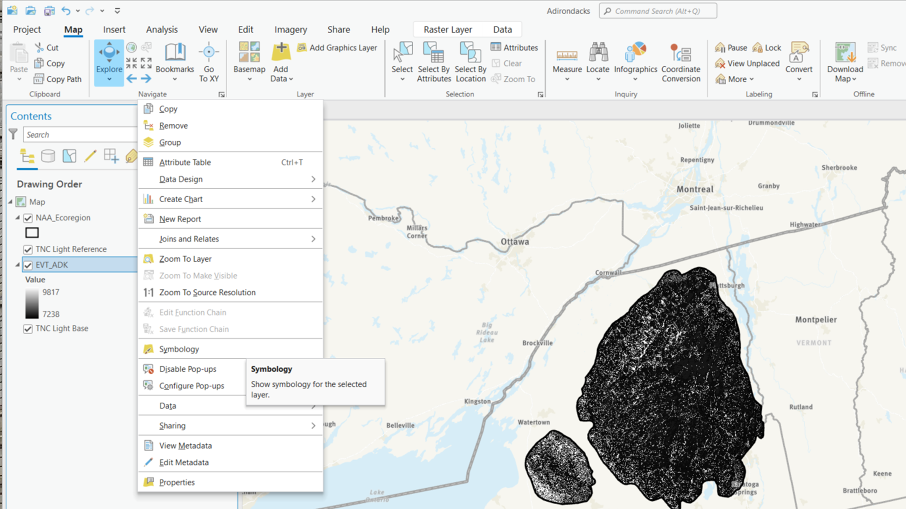
Selecting Unique Values as the Primary Symbology
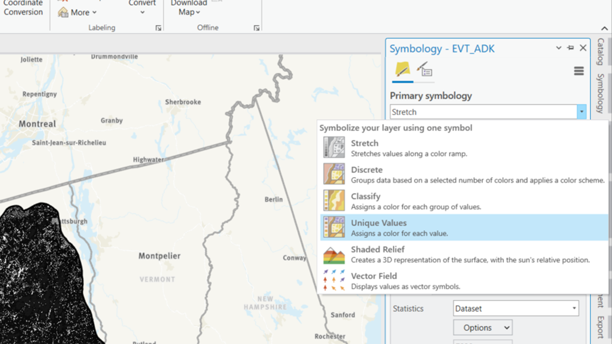
EVT layer displayed with Unique values. Note: This is using the LANDFIRE default color ramp and does not follow Universal Design best practices. Users with non-standard color vision may not be able to see the data patterns in this map
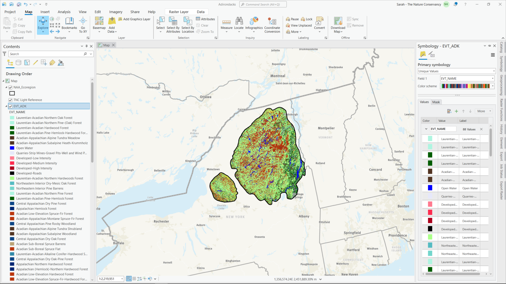
BONUS ACTION: Closing or pinning the Symbology pane
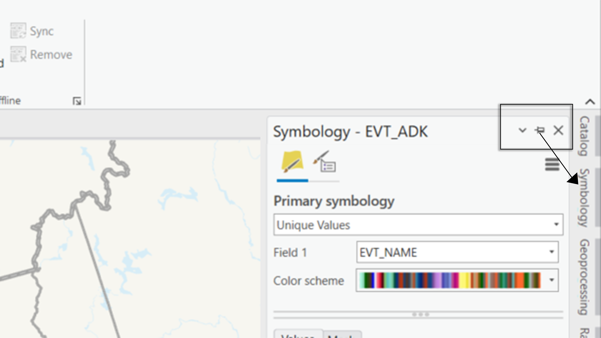
–
6.3 Export data tables
Before you move on to making charts with attribute data, you will need to know how to export datasets to .csv or Excel format. The .csv (or comma separated variable) format is the most useful, as it can be read by Excel as well as open source tools such as R or other free office software. Even when I am working in Excel, I export my files to .csv, since it is easier to read .csv files back in to ArcGIS Pro if I need to join new attributes to another table. Therefore, for this example, we will be exporting to .csv format.
Exporting to .csv format
- Right click on the layer name in the table of contents to open the layer properties menu, then browse to ‘Attribute Table’. This option can be found near the top of the menu.
- This will open the attribute table for the layer. Here you can examine and edit the attributes of the layer. For more information on attribute tables in LANDFIRE, please see the https://rswaty.github.io/landfire_book_simple/gis-explore.html section of this tutorial.
To export the attribute table, click the ‘hamburger menu’ (three horizontal lines in the top right corner of the attribute table pane) then select Export at the bottom of the menu.
This will open a pop up box, asking you for more information. At a minimum, you will want to make sure you have done the following:
- Input Table: Select the attribute table you want to export using either the dropdown or the file folder
- Output Table: Browse to the folder where you want to save the table. Name the table something meaningful, then add the .csv file extension at the end.
If you don’t add the file extension, ArcGIS Pro will save the table as either a geodatabase table or a .dbf, both of which are much more difficult to work with outside the ArcGIS environment.
- When you have selected the correct table and saved the output to a .csv file in a meaningful location, click OK in the Export Table dialogue box.
6.3.0.1 Screenshots for exporting an attribute table as a .csv
Where to click to open the attribute table.
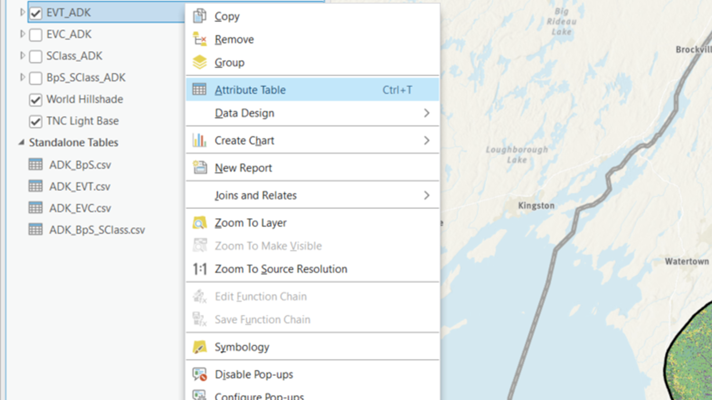
Exporting the Attribute Table
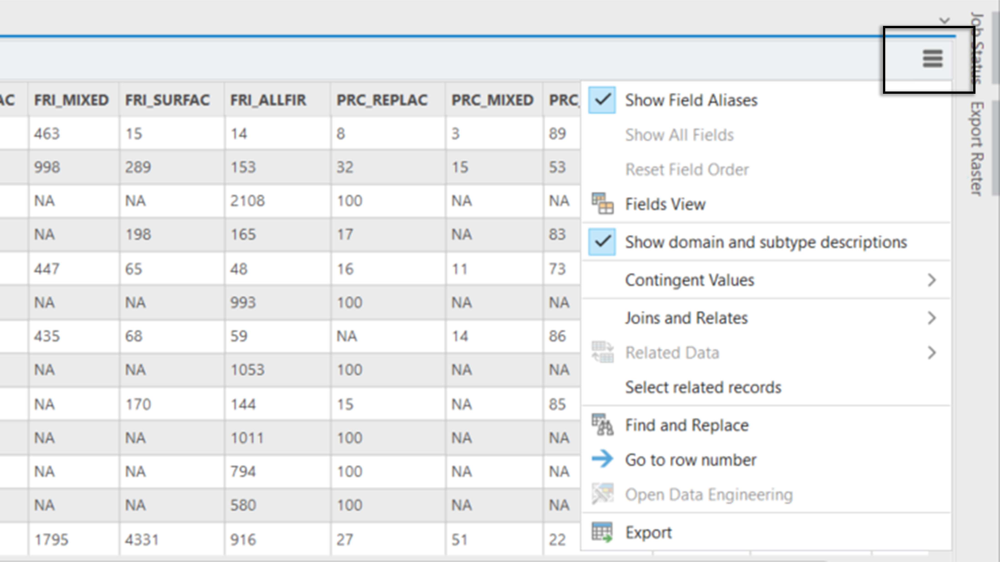
Export table options
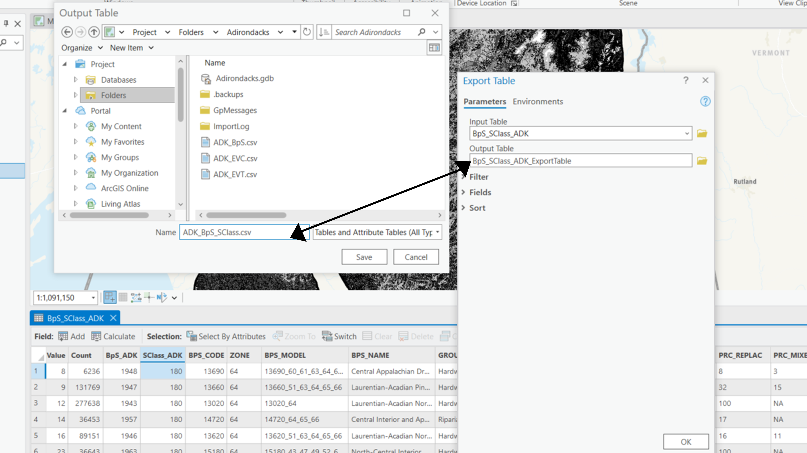
–
6.4 BONUS ACTION: Combining two raster data layers
In many cases, it may be useful to combine attributes from two rasters into one data table. This is best accomplished with the ‘Combine’ tool in ArcGIS Pro. the ‘Combine’ tool is part of the Spatial Analyst tools, and it is used to overlay multiple raster datasets to create a new raster output. The tool combines the input raster datasets based on their pixel values. The resulting output raster will have a new attribute table that includes information from all the input rasters.
The Combine tool is particularly useful when you want to identify unique combinations of attributes present in different raster datasets. It assigns a unique value to each combination, making it easier to analyze and interpret the spatial relationships.
In this tutorial, we will look at how to combine LANDFIRE BpS with LANDFIRE Succession Class Data, which is one of the steps you might take to better understand your landscape.
Combining two rasters
To get started with any tool in ArcGIS Pro, you will want to open the Geoprocessing pane. This can be found by navigating to the ‘View’ menu across the top, then selecting ‘Geoprocessing’ from the ribbon menu. The ‘Geoprocessing’ icon looks like a big red toolbox. Click it to open a new Geoprocessing pane in the right sidebar.
From here, you can either navigate to the Combine tool by clicking Toolboxes -> Spatial Analyst Tools -> Local -> Combine OR you can simply search for the tool by typing “combine” into the search box.
In the Combine tool, use the dropdowns or the folder icons to set the Input Rasters as all the rasters you want to combine. In this case, we will select BpS and SClass. Then set the Output Raster to something meaningful. Don’t forget to make sure the file path is to a location you will remember.
In addition, you will want to click on the Environments tab and set the following parameters. This is best practice for any and all raster data processing, as you want to be sure you’re saving everything with the correct coordinate systems and snapping your rasters to the same extent:
Output Coordinate System: Set this to be your preferred coordinate system OR use the dropdown to select one of the layers in your combine to ensure that the output layer has the same coordinate system as the input layers. In the case of LANDFIRE data, this should be NAD_1983_Contiguous_USA_Albers.
Cell size: Use the dropdown to set this to be the same as one of your input layers. This should be the same by default if your data all have 30 meter pixels, but I like to set it to be sure.
Mask: It’s not usually necessary, but I like to set this to be the extent of our shapefile or area of interest just to be sure that we’re only processing the pixels we need
Snap Raster: This is important to pay attention to Generally, I set this to either the initial LANDFIRE dataset I’m using as my primary data (in this case, LANDFIRE BpS) or to one of the layers I’m using in the combine. It’s important that you set the snap raster to be the same raster dataset for every single raster you want to use in an analysis to ensure that the pixels will line up.
When you have set the input and output values and the environment settings, click run. This may take some time depending on the size of your area of interest. If you want to check progress, you can click ‘View Details’ at the very bottom of the Geoprocessing panel where the tool is running.
Once you have combined the datasets, you then need to add in the fields of interest from the individual rasters, as the combine will only show you the value fields from each raster you combined. Here’s the process for that:
Use the Join Field tool in the Geoprocessing toolbox (you can search for it). This tool permanently joins the contents of one table to another based on a common attribute field (in this case, the value field of the raster). You can select which fields from the join table will be added to the input table.
To join in the BpS Attributes, set the input table to your combine table (in this example it’s called BpS_SClass_ADK), then set the Input Join Field to the BpS Value field (in this example, BpS_ADK – the name of my BpS layer). Set the join table as your BpS layer (here, BpS_ADK), and the Join Table Field to ‘Value’. This will match the value field from your BpS layer to the correct values in the correct field in your combine.
Before you hit run, it’s important to select which fields you want to join. You can do this either by Field Mapping or by Selecting Transfer Fields. This is set in the Transfer Method dropdown. In this example, I have chosen to use field mapping. With field mapping, you see a list of all the fields in the Join table (BpS) and have the option to click an x next to any field you don’t want to join. In our case, we want to join all the fields except the value field (which we already have).
To join in the SClass attributes, you follow the same procedure as above, but set the input Join field to the SClass value field (SClass_ADK) and the Join table to your SClass layer (SClass_ADK). I also took out most of the fields in the field mapping, because I am only interested in the label and description fields.
When you are done, your combined layer should have an attribute table that includes all the attributes from your BpS layer as well as the label and description fields from your SClass layer. This will allow you to understand what proportion of each BpS is in a given succession class, as mapped by LANDFIRE.
6.4.0.1 Screenshots for combining two rasters
Where to click to open the Geoprocessing tools.
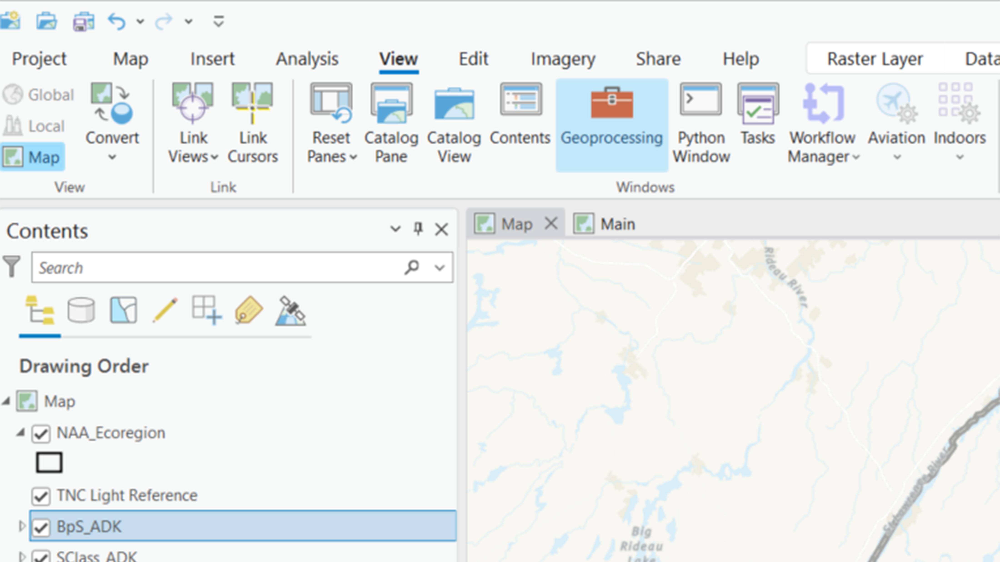
Open the Combine tool
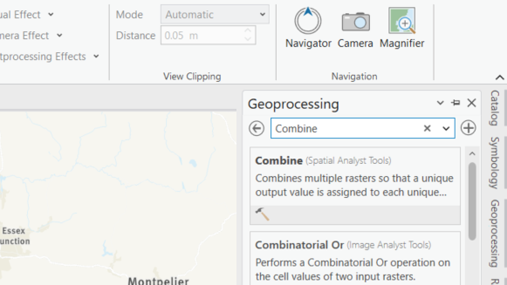
Set the parameters
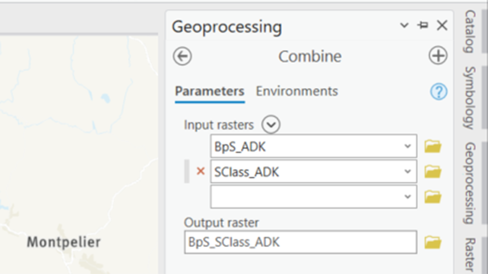
Set the environments

Join Field Settings
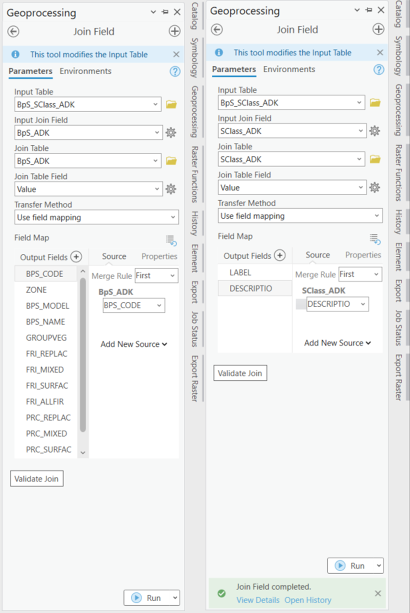{fig-alt=“"A screenshot showing the parameters for both join field runs as described in the text above. Input table for both is BpS_SClass. The Join fields are the respective layer fields (BpS, SClass) and the join tables are BpS and SClass, respectively. The Join Table field for both is Value.}
Your final attribute table should have all the BpS Values and the relevant SClass values
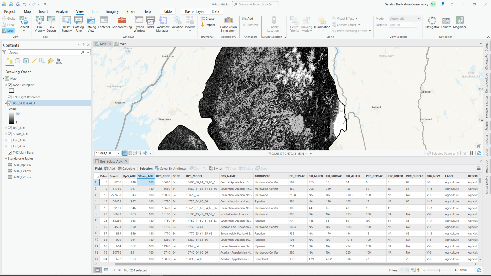{fig-alt=“"A screenshot showing attribute table for the combined layer with all the BpS attributes as well as Label and Description from the Succession Class layer.}
–